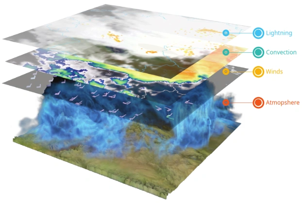
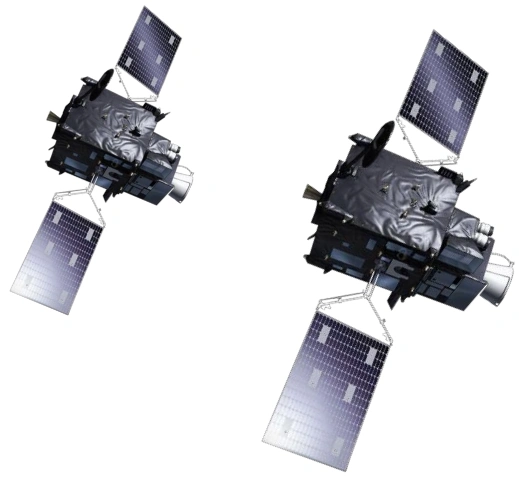
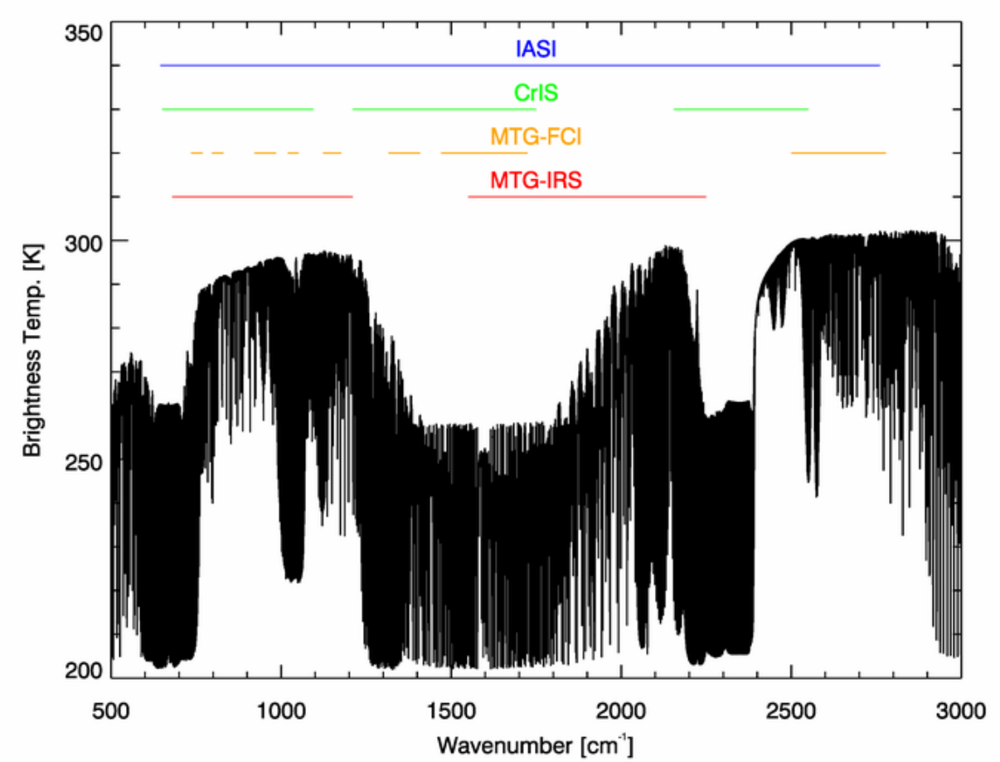

MTG-S Sounding mission

- Infrared Sounder (IRS)
- 1/4 of Full disk /15 minutes
- Ultraviolet Visible Near-infrared (UVN) Sounder
- Copernicus Sentinel-4
NOA/ReACT
Athanasios Natsis

EUMETSAT, Satellite Application Facilities (SAF)

Full Earth disk every 10 minutes
| Spectral ch. | Central wavelength | Spectral width | Spatial Sampling Distance | |
|---|---|---|---|---|
| 1 | VIS 0.4 | 0.444 µm | 0.060 µm | 1.0 km |
| 2 | VIS 0.5 | 0.510 µm | 0.040 µm | 1.0 km |
| 3 | VIS 0.6 | 0.640 µm | 0.050 µm | 1.0 km 0.5 km (HR) |
| 4 | VIS 0.8 | 0.865 µm | 0.050 µm | 1.0 km |
| 5 | VIS 0.9 | 0.914 µm | 0.020 µm | 1.0 km |
| 6 | NIR 1.3 | 1.380 µm | 0.030 µm | 1.0 km |
| 7 | NIR 1.6 | 1.610 µm | 0.050 µm | 1.0 km |
| 8 | NIR 2.2 | 2.250 µm | 0.050 µm | 1.0 km 0.5 km (HR) |
| 9 | IR 3.8 | 3.800 µm | 0.400 µm | 2.0 km 1.0 km (HR) |
| 10 | WV 6.3 | 6.300 µm | 1.000 µm | 2.0 km |
| 11 | WV 7.3 | 7.350 µm | 0.500 µm | 2.0 km |
| 12 | IR 8.7 | 8.700 µm | 0.400 µm | 2.0 km |
| 13 | IR 9.7 | 9.660 µm | 0.300 µm | 2.0 km |
| 14 | IR 10.5 | 10.500 µm | 0.700 µm | 2.0 km 1.0 km (HR) |
| 15 | IR 12.3 | 12.300 µm | 0.500 µm | 2.0 km |
| 16 | IR 13.3 | 13.300 µm | 0.600 µm | 2.0 km |
Visible (VIS), Near Infrared (NIR), Infrared (IR), Water Vapour (WV)
An example of more products from SAF
Predefined composites of wavelengths…
from satpy import Scene
scn = Scene(filenames=files, reader='fci_l1c_nc')
print(scn.available_composite_names())24h_microphysics, airmass, ash, cimss_cloud_type, cimss_cloud_type_raw, cloud_phase, cloud_phase_distinction, cloud_phase_distinction_raw, cloud_phase_raw, cloud_phase_with_night_ir105, cloud_type, cloud_type_with_night_ir105, cloudtop, colorized_ir_clouds, convection, day_essl_colorized_low_level_moisture, day_essl_low_level_moisture, day_microphysics, day_severe_storms, day_severe_storms_tropical, dust, essl_colorized_low_level_moisture, essl_low_level_moisture, fci_fire_channels_sum, fire_temperature, fire_temperature_38refl, fire_temperature_rad, flames_masked, fog, geo_color, geo_color_background_with_low_clouds, geo_color_high_clouds, geo_color_low_clouds, geo_color_night, green_snow, hrv_clouds, ir108_3d, ir_cloud_day, ir_sandwich, ir_sandwich_with_night_colorized_ir_clouds, natural_color, natural_color_raw, ndvi_hybrid_green, ndvi_hybrid_green_fully_sunzencorrected, ndvi_hybrid_green_raw, night_fog, night_ir105, night_ir_alpha, night_ir_with_background, night_ir_with_background_hires, night_microphysics, night_microphysics_tropical, overshooting_tops, rocket_plume_day, rocket_plume_night, simple_fci_fire_mask, snow, true_color, true_color_flames_with_night_ir105, true_color_fully_sunzencorrected, true_color_raw, true_color_raw_with_corrected_green, true_color_reproduction, true_color_reproduction_corr, true_color_reproduction_uncorr, true_color_with_night_ir, true_color_with_night_ir105, true_color_with_night_ir_hires, volcanic_emissions
LI Lightning Imager Groups
| Variable | Description |
|---|---|
group_time |
UTC time of the group. |
latitude |
Average latitude of the events in the group weighted by the event radiance. |
longitude |
Average longitude of the events in the group weighted by the event radiance. |
radiance |
Total radiance of the group (Optical Characteristics of OTD Flashes and the Implications for Flash-Type Discrimination). |
number_of_events |
Number of events in the group. |
flash_id |
ID of the flash that allows one to relate the groups in the LI-2-LGR-x-FD-x to the LI-2-LFL-x-FD-x |
group_filter_qa |
Quality of the group computed at the group-rejection step; the step at which groups are analysed singularly (Rejection of groups prior to the computation of flashes). |
Key variables in LI-2-LGR-x-FD-x.
LI Lightning Imager Flashes
| Variable | Description |
|---|---|
flash_time |
UTC time of the first group in the flash. |
flash_duration |
Duration of the flash, ie, time difference between the first a the last group of the flash. |
latitude |
Average latitude of the events in the flash weighted by the event radiance. |
longitude |
Average longitude of the events in the flash weighted by the event radiance. |
radiance |
Total radiance of the flash (Optical Characteristics of OTD Flashes and the Implications for Flash-Type Discrimination). |
number_of_events |
Number of events in the flash. |
number_of_groups |
Number of groups in the flash. |
flash_footprint |
Size of the flash footprint in number of pixels. |
flash_id |
ID of the flash. |
flash_filter_confidence |
Quality of the filter computed at the group-rejection step; the step at which groups are analysed singularly (Rejection of flashes). |
Key variables in LI-2-LFL-x-FD-x.
Spatial: 4km at nadir (1.025° x 1.025°)
Temporal: 15 – 30 minutes for local zones, 60 minutes for full disk
Atmospheric dynamic variables (e.g. water vapour flux, wind profiles, transport of pollutant gases).
Goal:
Hyperspectral infrared sounder
| Band | Wavenumber Range | Channels | Main Targets |
|---|---|---|---|
| Long Wave IR (LWIR) | 679.5 – 1210.0 cm-1 | 887 | H2O, CO2, O3, Surface, Clouds, Aerosols |
| Mid Wave IR (MWIR) | 1600.0 – 2250.4 cm-1 | 1076 | H2O, CO, N20, NO |
Vertical resolution TBD … (~ 2km)
https://user.eumetsat.int/resources/user-guides/mtg-irs-level-1-data-guide
L2
Test/Simulated data available here
https://user.eumetsat.int/resources/user-guides/mtg-irs-level-1-data-guide

Infrared Atmospheric Sounding Interferometer (LEO),
Cross-track Infrared Sounder (LEO),
MTG InfraRed Sounder (GEO),
MTG Flexible Combined Imager (GEO)
https://user.eumetsat.int/resources/user-guides/mtg-irs-level-1-data-guide
Objective: Observe the diurnal cycle of the tropospheric composition, trace gases, aerosol and cloud properties
O3 (Ozone), NO2 (Nitrogen dioxide), SO2 (Sulfur dioxide), HCHO (Formaldehyde), CHOCHO (glyoxal)
| Instrument type | Passive imaging spectrometer |
| Spectrometric bands | 3, Ultraviolet (305-400 nm), Visible (400-500 nm) and Near Infrared(750-775 nm) 1 |
| Spectrometric channels | 2, (UV-VIS channel; NIR channel) |
| Field Of View | E-W: 30°W-46.5°E @ 40°N, N-S: 30°N-65°N |
| Spatial resolution | 8 x 8 km2 |
| Spectral resolution | 0.5 nm for the UV-VIS channel; 0.12 nm for the NIR channel |
| Radiometric accuracy (absolute) | 3% (2% goal) of the measured sun irradiance, earth radiance and spectral reflectance. |
| Revisit time | ~ 60 min |
L1
| Level-1B product | Parameter(s) | Distributed |
|---|---|---|
| Earth Radiance | Spectrally and radiometrically calibrated and geo-located Earth radiance | To all users |
| Solar Irradiance | Spectrally and radiometrically calibrated Solar irradiance | To all users |
| DPPF | Data Processing Parameters | To Expert Users |
| Calibration | Calibration data. | To Expert Users |
| Star | Star calibration data | To Expert Users |
| Diagnostic | Instrument diagnostic data | To Expert Users |
L2
| Level-2 products | Parameter(s) |
|---|---|
| O3 | Ozone (O3) total column, tropospheric sub-column, |
| NO2 | Nitrogen dioxide (NO2) total column, tropospheric sub-column |
| SO2 | Sulfur dioxide (SO2) total column |
| HCHO | Formaldehyde (HCHO) total column |
| CHOCHO | Glyoxal (CHOCHO) total column |
| Cloud | Cloud optical thickness, fraction, altitude |
| Aerosol | Aerosol column optical thickness, type, layer height, absorbing index |
| Surface | Surface and aerosol characteristics |
ευχαριστώ!
contact:
anatsis@noa.gr
source code:
github.com/thanasisn
VIS and NIR bands implemented in two spectrometers UVVIS & NIR)↩︎